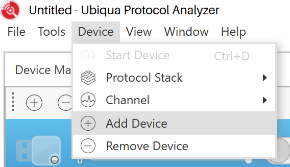
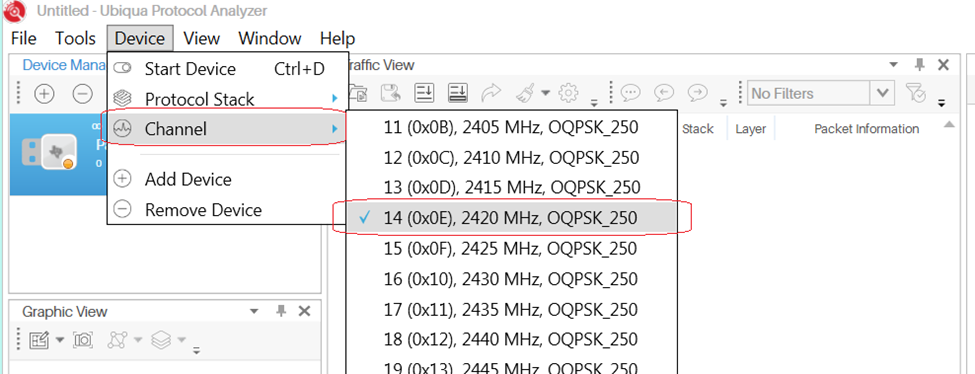
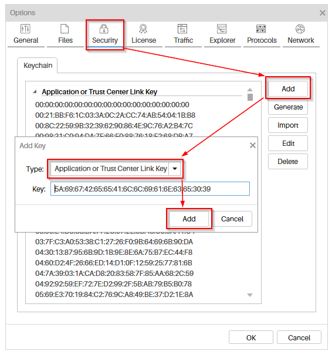
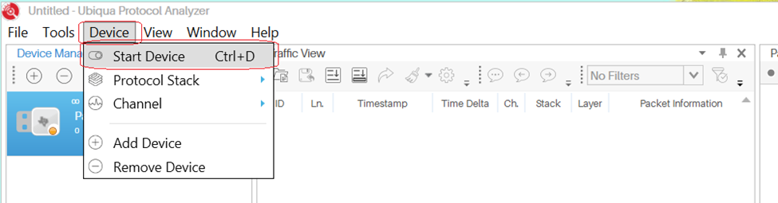
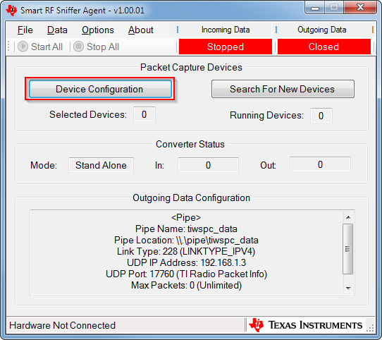
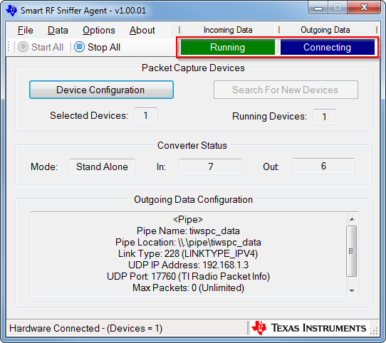
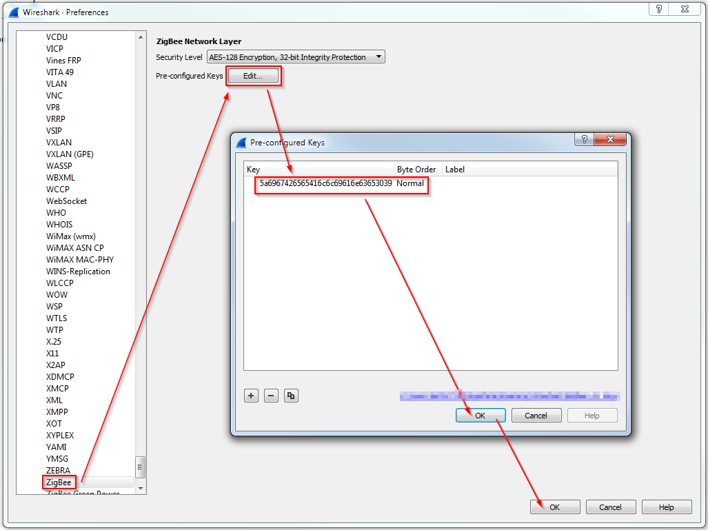
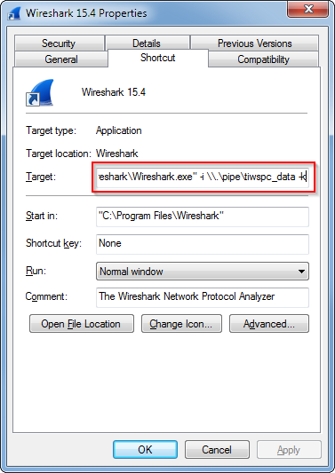

Packet Sniffer¶
Ubiqua Protocol Analyzer¶
Install the Required Software¶
Download the Ubilogix Ubiqua packet sniffer software from: https://www.ubilogix.com/ubiqua/
To get the drivers for the CC2531EMK dongle install the TI Packet sniffer from: http://www.ti.com/tool/packet-sniffer
To program the CC2531EMK install TI Flash Programmer from: http://www.ti.com/tool/flash-programmer
To get the drivers for the CC2650/CC2652/CC1352 LaunchPad install the TI Packet sniffer 2 from: http://www.ti.com/tool/packet-sniffer
To program the CC2650/CC2652/CC1352 LaunchPad install UniFlash from: http://www.ti.com/tool/UNIFLASH
Required Hardware¶
One of the following boards should be used:
TI CC2531EMK USB Dongle: http://www.ti.com/tool/CC2531USB-RD
(optional for programming CC2531EMK) CC-debugger http://www.ti.com/tool/cc-debugger
TI CC2652 Launchpad: http://www.ti.com/tool/LAUNCHXL-CC26X2R1
TI CC1352 Launchpad: http://www.ti.com/tool/LAUNCHXL-CC1352R1
TI CC1352 PA Launchpad: http://www.ti.com/tool/LAUNCHXL-CC1352P
TI CC2650 Launchpad: http://www.ti.com/tool/LAUNCHXL-CC2650
Hardware Setup¶
Connect the CC2531EMK or CC2650/CC2652/CC1352 LaunchPad to the computer with Ubiqua installed.
If necessary, program your relevant sniffer hardware.
For CC2531EMK, use the hex image
sniffer_fw_cc2531.hexatC:\Program Files (x86)\Texas Instruments \SmartRF Tools\Packet Sniffer\bin\general\firmwareand Flash Programmer.To use the CC2531EMK, the Cebal driver must be installed. If you have installed Flash Programmer, the Cebal driver should already be installed. However, if the driver is not installed, Ubiqua provides the necessary files for installing the Cebal driver. The installation files are found under
C:\Program Files (x86)\Ubilogix\Drivers\TI\, withcebal2.*files for 32-bit Windows andcebal2_x64.*files for 64-bit Windows. Depending on which Windows version you are using, refer to a corresponding guide for how to install Windows drivers.For CC2650/CC2652/CC1352 LaunchPad, use
sniffer_fw.hexatC:\Program Files (x86)\Texas Instruments\SmartRF Tools\SmartRF Packet Sniffer 2\sniffer_fw\bin\{your_device}and UniFlash.
Running the Packet Sniffer¶
Connect your sniffing hardware to your PC.
Start Ubiqua.
Select Menu → Device → Add Device, and the Add Device window will appear.
Figure 125. ubiqua add device¶
In the Available Devices column click the Local Devices expander, and select your hardware, either the CC2531EMK or the Application COM Port of the CC2650/CC2652/CC1352 LaunchPad.
For the CC2531EMK, follow the prompts to add the device. For the CC2650/CC2652/CC1352 LaunchPad, refer to the settings below:

Figure 126. Ubiqua select device¶
Right click on your device in the Device Manager window, and select the Protocol Stack option.
Click on the Zigbee checkbox.

Figure 127. Ubiqua select Zigbee protocol option¶
Choose the Channel
In Z-Stack, the channel is set by
DEFAULT_CHANLISTinti_zstack_config.h. For details, see Configuring Channel.
From Ubiqua, select Menu → Device Channel, and choose the matching channel:
Figure 128. Ubiqua channel selection¶
Enter the Default TC Link Key
In order to decrypt Zigbee traffic, you will need to enter the default Trust Center Link Key into the Ubiqua keychain.
From Ubiqua, select Tools → Options → Security → Add → Application or Trust Center Link Key
Enter the following key:
5a6967426565416c6c69616e63653039Start Capture
From Ubiqua, Select Menu → Device → Start Device
Figure 129. Starting capture¶
If required, Select: Menu → View → Traffic View (or other selections) to view activity.
Wireshark¶
Install the Required Software¶
TI Packet Sniffer 2: http://www.ti.com/tool/packet-sniffer
Wireshark 3.0: https://www.wireshark.org/#download
To program the CC2650/CC2652/CC1352 LaunchPad install UniFlash from: http://www.ti.com/tool/UNIFLASH
Required Hardware¶
One of the following boards should be used:
TI CC2652 Launchpad: http://www.ti.com/tool/LAUNCHXL-CC26X2R1
TI CC1352 Launchpad: http://www.ti.com/tool/LAUNCHXL-CC1352R1
TI CC1352 PA Launchpad: http://www.ti.com/tool/LAUNCHXL-CC1352P-2
TI CC2650 Launchpad: http://www.ti.com/tool/LAUNCHXL-CC2650
Hardware Setup¶
Connect the CC2650/CC2652/CC1352 LaunchPad to the computer with Ubiqua installed and determine the correct COM Port for your LaunchPad. It will be the “XDS110 Class Application/User UART” port for your device, you can determine this in Windows by going to Device Manager > Ports
If necessary, program your relevant sniffer hardware.
For CC2650/CC2652/CC1352 LaunchPads, use
sniffer_fw.hexatC:\Program Files (x86)\Texas Instruments \SmartRF Tools\SmartRF Packet Sniffer 2\sniffer_fw\bin\{your_device}and UniFlash.
Running the Packet Sniffer¶
Connect your sniffing hardware to your PC.
Start SmartRF Packet Sniffer 2 Sniffer Agent and select Device Configuration
Select your IEEE channel to sniff

If your Sniffer Agent looks like this, you are ready to set up Wireshark:
Add the TI 15.4 Wireshark Dissector to Wireshark (assuming x64 installation)
Navigate to
C:\Program Files (x86)\Texas Instruments\SmartRF Tools\ SmartRF Packet Sniffer 2\wireshark\plugins\3.0.x\and copyti802154ge-x64-2x.dllandtirpi-x64-2x.dlltoC:\Program Files\Wireshark\plugins\3.0\Open Wireshark go to Edit > Preferences > Protocols > Zigbee add the Zigbee TC Link Key
5a6967426565416c6c69616e63653039Close Wireshark and create a new Desktop shortcut for Wireshark and add the following to the path:
-i\\.\pipe\tiwspc_data -kThis will set up the Pipe that sends data from Sniffer Agent into Wireshark
Open Wireshark with the new shortcut and you will see Wireshark sniffing Zigbee data.